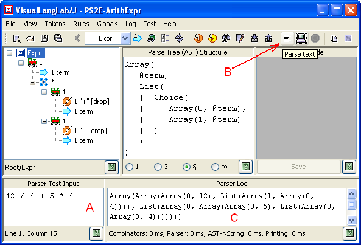

VisualLangLab - Testing Parsers
The greatest advantage of VisualLangLab over other tools is ease of testing.
Every other parser development tool requires
a quite complex code-generation step that must be completed without
errors before the parser can be run for testing.
But the grammar-tree in VisualLangLab is executable --
meaning it can be run directly without any code-generation or
other manual activity.
Validation is as Easy as A-B-C
Since the grammar-tree is executable, validation is just
three simple steps:
- Enter test input in the Parser Test Input area (as at "A"
in Figure-1 below)
- Click the Parse input button (at "B" in Figure-1),
or select Test -> Parse input from the main menu
- Verify that the parser's output (at "C") is correct

Figure-1. Three simple steps to validation
The approach shown above is tedious as it requires manual verification
of potentially complex data-structures. So while several approaches to
test automation will be described below, note that manual testing is
very useful during active development -- particularly to support an
iterative, incremental process.
Testing Grammar-Trees Separately
To be defined ...
Providing Test Input from Files
Input for testing can also be obtained from a file instead of the
Parser Test Input area. To provide input from a file,
you should click the Parse file button
(next to the Parse input button).
When the Parse file button is clicked a file-chooser dialog
is presented. Selecting a file and clicking the file-chooser's
Open button causes the parser to the run using text from
the file.
If a directory is selected in the file-chooser dialog,
the grammar-tree is run on each of the files found in
the directory tree rooted at the selected directory.
Terminating a Long Running Test
While a parser is being run the Stop parsing button
 is enabled. This is not noticed during a typical test as the
run ends very quickly, and the button returns to its usual
disabled state. However, a test run that appears to be running
for too long can be terminated by clicking this button.
is enabled. This is not noticed during a typical test as the
run ends very quickly, and the button returns to its usual
disabled state. However, a test run that appears to be running
for too long can be terminated by clicking this button.
Automated Testing
To be defined ...
Standard Tools
To be defined ...
JUnit et al and VisualLangLab API
To be defined ...
Action Code
To be defined ...